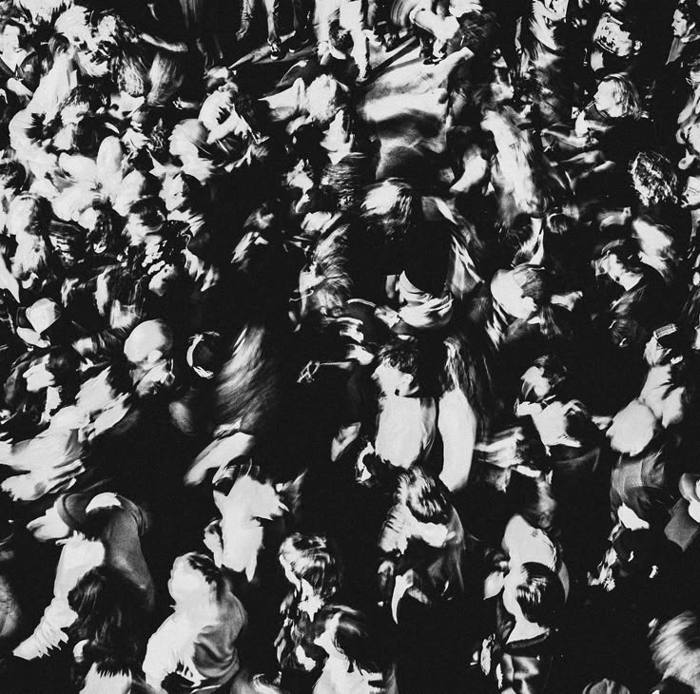
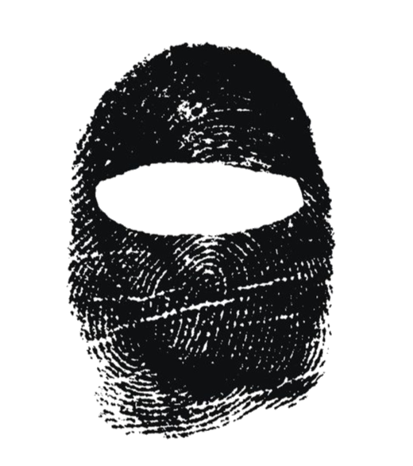
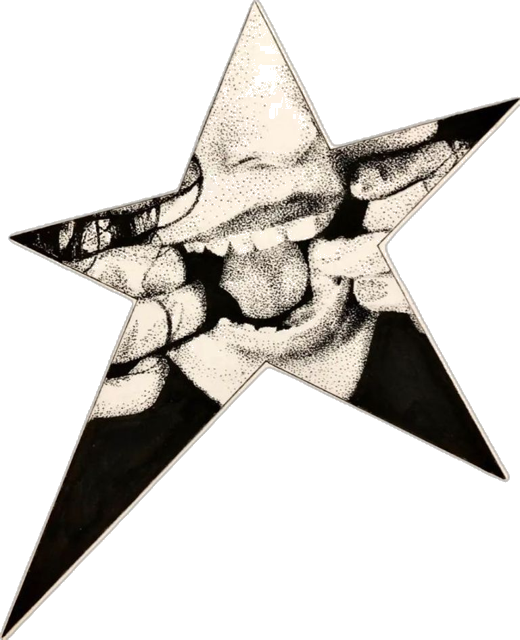
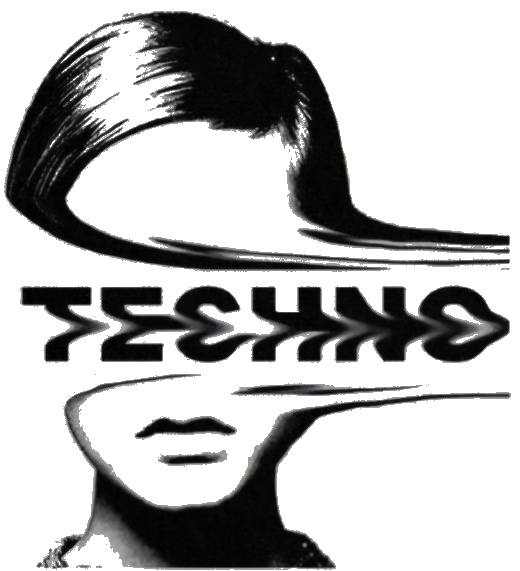
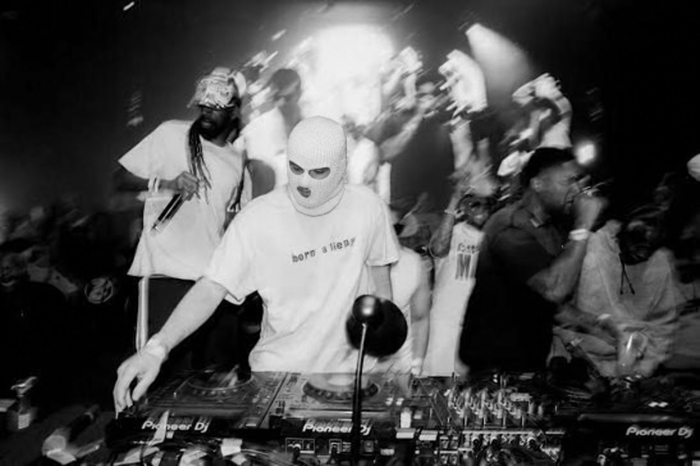
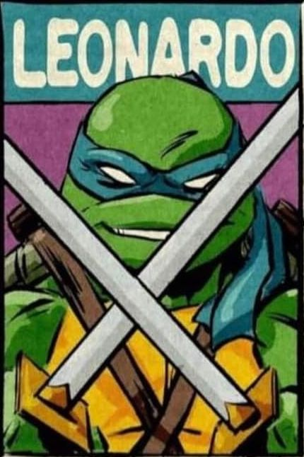
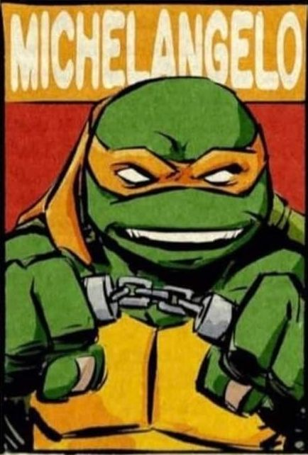
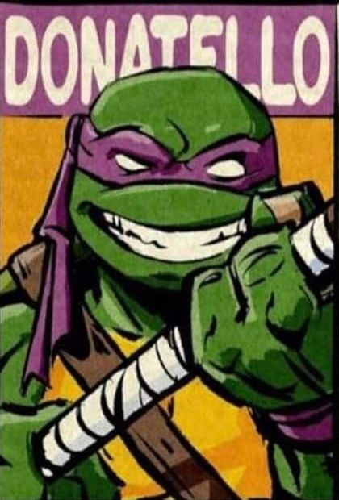
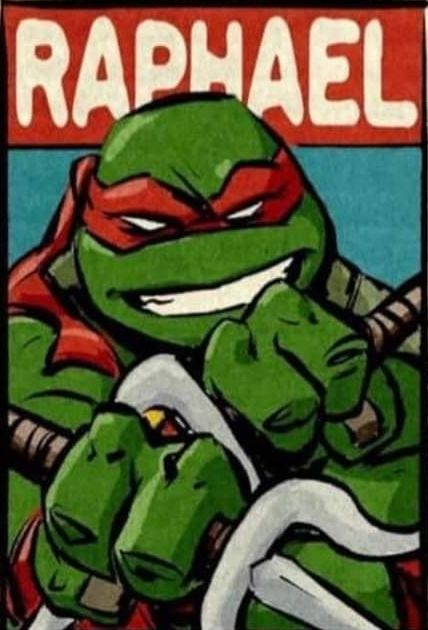

ССелектор · відгук
Марʼянавипуск 2025
Після першого сету руки тремтіли, а після випускного — вже ні. Танцпол тепер відчуваю, а не вгадую.
Школа діджеїнгу від Андрія Витюка — практика на реальних сетах, без води і теорії заради теорії.




Селектор заснував Андрій Витюк — діджей, який грав на Tomorrowland в Ібіці та на десятках afterdark техно-шоу по всій Європі. Тут вчать не «включати треки», а читати танцпол, будувати сет і триматись за пультом впевнено з першого виступу.

Мікс, побудова енергії сету, читання танцполу.
Робота з вінілом, техніка рук, класична школа діджеїнгу.
Від ідеї до готового релізу в DAW.
Після першого сету руки тремтіли, а після випускного — вже ні. Танцпол тепер відчуваю, а не вгадую.
Після першого сету руки тремтіли, а після випускного — вже ні. Танцпол тепер відчуваю, а не вгадую.
Чесно про фах, без казок про легкі гроші. Два місяці — і я граю в барі щоп’ятниці.
Андрій розбирав мої сети по хвилинах. Жодного «нормально» — завжди «ось тут можна сильніше».
Думав, вініл — це музей. Тепер у мене дві вертушки й мозолі на пальцях.
Випускний виступ був у справжньому клубі. Мама прийшла і пішла тільки під ранок.
Перший реліз вийшов через місяць після курсу. Трек зіграли на тому ж танцполі, де я вчився.

Резидент нічного клубу «Каналізація» чотири сезони поспіль
Відіграв шестигодинний сет без жодного збою біту

Переможець баттлу «Вініл без правил» 2023
Зібрав повний танцпол на даху о п’ятій ранку

12 релізів на незалежних лейблах
Сам зібрав свій перший MIDI-контролер

Двічі найкращий скретч на баттлі «Голка»
Грає на вінілі без жодної синхронізації
Ні, базовий курс розрахований на початківців. Менторський формат підійде тим, хто вже грає і хоче вийти на новий рівень.
Клубні контролери та пульти рівня, який стоїть у реальних клубах — без спрощеного навчального обладнання.
Так, кожен потік завершується виступом перед публікою — це частина програми, а не бонус.
Базовий — 2 місяці, менторський — індивідуальний графік з Андрієм.
Так, доступна оплата у 2–3 частини протягом курсу — деталі обговорюємо після заявки.
Базовий курс — від 16 років, менторський формат без вікових обмежень.
Основний формат — офлайн у студії школи, окремі теоретичні блоки можна проходити дистанційно.